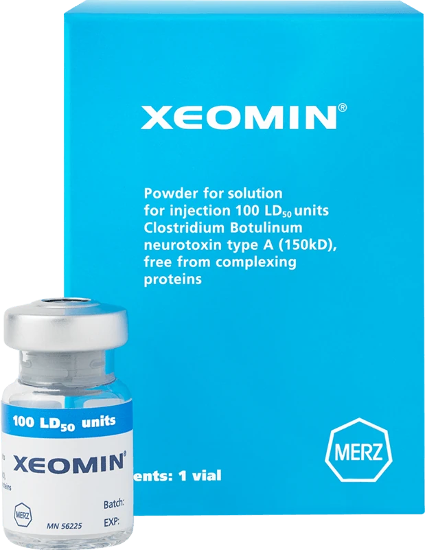

Xeomin in Penang | CANVAS Medical Clinic
The purified "naked" anti-wrinkle injection — physician-administered Xeomin at our Gurney Walk clinic in George Town, Penang. A botulinum toxin free from complexing proteins, dosed precisely for natural, rested results with no frozen look.


What is Xeomin?
Xeomin (incobotulinumtoxinA) is a botulinum toxin type A made by Merz Aesthetics. Like other toxins it temporarily relaxes the muscles that create dynamic wrinkles — but Xeomin is distinct in its formulation. It is uniquely purified so that only the active neurotoxin remains, free from the complexing (accessory) proteins carried in other botulinum toxins. This is why it is often called the "naked" toxin.
At CANVAS Medical Clinic in George Town, Penang, every Xeomin treatment is planned and administered by an LCP-certified physician. We assess your facial anatomy individually and dose precisely — so you leave looking refreshed and natural, not treated.
Why the "naked" toxin matters
Every botulinum toxin contains the same active molecule. What differs is what surrounds it. Most toxins package the active protein with inactive complexing proteins; Xeomin removes them, delivering only the part that does the work.
The complexing proteins are harmless, but in a small number of people, repeated exposure to foreign proteins over many years can prompt the body to form neutralising antibodies — which can gradually reduce how well a toxin works (a phenomenon called secondary non-response or resistance). Xeomin's protein-free formulation is designed to minimise that theoretical risk, which is why it is often a considered choice for long-term or frequent users. Your physician will discuss honestly whether this is relevant to your history and goals.
- Only the active neurotoxin — no complexing proteins
- May lower the theoretical risk of resistance over long-term repeat use
- The same trusted mechanism and natural results as other toxins
- A considered option for frequent or long-term toxin users
How it works
- Consultation & assessment. Your physician examines your facial muscles at rest and in motion, discusses your goals, and advises whether Xeomin suits your history — including long-term use — and your anatomy.
- Marking & dosing. Injection points are mapped to your individual anatomy and dosing is planned precisely. We avoid over-treatment as a principle.
- Injection. Very fine needles deliver small amounts of Xeomin to the targeted muscles. Most patients describe minimal discomfort; the procedure takes 15–20 minutes.
- Review at 2 weeks. Results develop over three to seven days and are fully visible at two weeks. We offer a review to assess the outcome and make any minor adjustments if needed.
Benefits
Purified formulation
Only the active toxin — free from the complexing proteins found in other brands.
Dynamic wrinkle reduction
Softens frown lines, forehead lines and crow's feet caused by expression.
Considered for long-term use
A protein-free option often chosen to minimise the theoretical risk of resistance.
Natural, not frozen
Precise, less-is-more dosing for a rested look that still moves naturally.
Quick, minimal downtime
Most patients return to their day immediately after a 15–20 minute session.
Temporary & adjustable
Effects last around three to four months, so results adjust with each session.
Who it's for
Xeomin may be appropriate if you:
- Have frown lines, forehead lines or crow's feet that appear with expression
- Are a long-term or frequent toxin user and prefer a purified formulation
- Have noticed a previous toxin becoming less effective over time
- Want a non-surgical brow lift or softening of a heavy brow
- Are looking to slim or soften a square jaw from masseter hypertrophy
- Are in good general health with realistic expectations
Xeomin is not suitable during pregnancy or breastfeeding, or with certain neuromuscular conditions. All contraindications are assessed at consultation.
Xeomin vs other anti-wrinkle brands
CANVAS carries a full range of licensed botulinum toxins, so the choice is clinical rather than limited by what is on the shelf. Xeomin is the purified, protein-free option. Botox is the most studied toxin with decades of data; Dysport offers a faster onset and softer spread; Nabota gives dependable value; Letybo is known for natural results in frown lines.
Which suits you depends on the area, your history with toxins and how your muscles respond. Your physician will recommend — and explain — the right choice at consultation, with pricing confirmed transparently beforehand. Compare all anti-wrinkle brands →
Why CANVAS
At CANVAS Medical Clinic, Xeomin is administered only by qualified, LCP-certified physicians — not delegated to nurses or aestheticians. Our approach is less-is-more: the best result is one that makes you look like a well-rested version of yourself, not a different person.
We use only licensed, registered products and maintain full storage compliance. Your safety is non-negotiable.
- LCP-certified physicians administer every injection
- Individual anatomy assessment at every consultation
- Honest advice on brand choice for your history and goals
- Routine 2-week review included
- Central Gurney Walk location with easy covered parking
Xeomin in Penang, answered.
Care led by our physicians
Your Xeomin treatment at CANVAS is planned and carried out by qualified, LCP-certified doctors registered with the Malaysian Medical Council — care is never delegated to unsupervised operators. Meet the physicians behind your treatment:
- LCP CertifiedPhysician-led care
- MMC RegisteredQualified doctors
- Authentic ProductsLicensed & registered
- Open Daily10am – 10pm
Related treatments
Explore other physician-led treatments at our Gurney Walk clinic in George Town, Penang.
From our patients
Read our reviews on Google →Considering Xeomin in Penang?
Book a consultation with our physicians at Gurney Walk and we'll assess your goals, explain your brand options and design a treatment plan that's entirely yours — with no obligation to proceed.
Reserve a Consultation